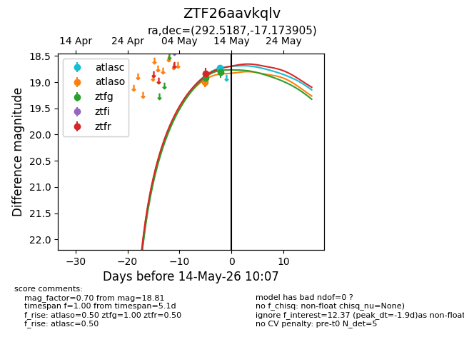
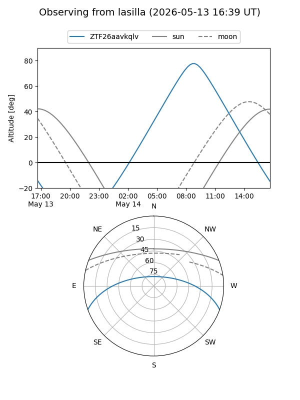
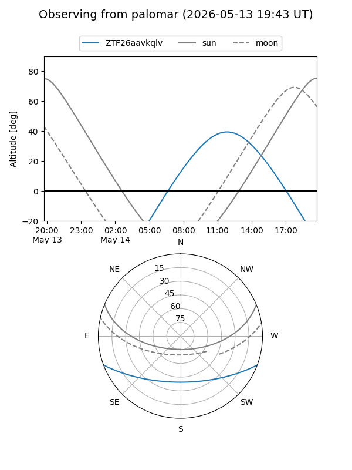
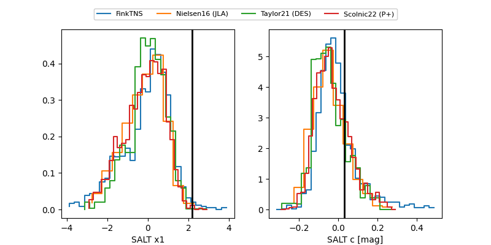

ZTF26aavkqlv
Target ZTF26aavkqlv at 2026-05-14 10:08
Aliases and brokers:
FINK: link
Lasair: link
ALeRCE: link
alt names
ZTF26aavkqlv (ztf,fink_ztf)
Coordinates:
equatorial (ra, dec) = 292.5187,-17.17390
equatorial (HMS+DMS) = 19:30:04.50,-17:10:26.06
galactic (l, b) = (21.5449,-16.09980)
Flags:
Photometry:
last atlasc=18.72, atlaso=19.00, ztfg=18.81, ztfr=18.83
1 atlasc, 1 atlaso, 2 ztfg, 1 ztfr detections
Lightcurve

Visibility


Additional plots
